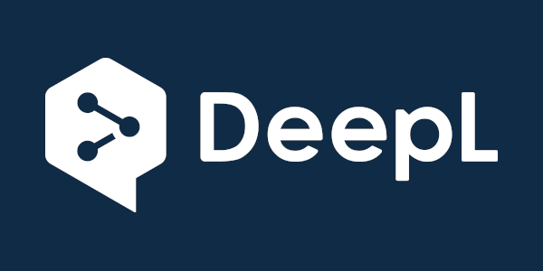
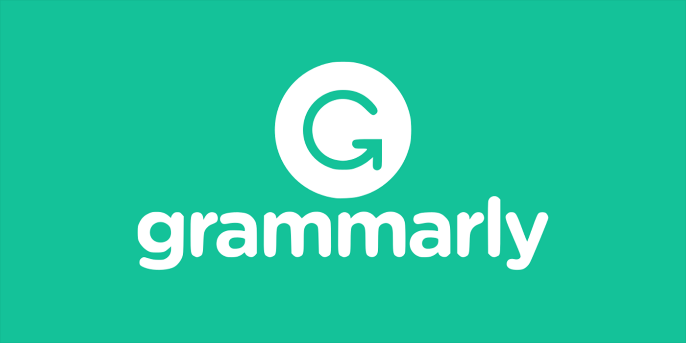

GPT3 es la herramienta de IA más popular del mercado en la actualidad debido a la facilidad de uso y la rapidez en sus respuestas. Dentro del marketing digital tiene diferentes usos, especialmente en la generación de contenidos.

ayuda a ahorrar tiempo en la búsqueda de palabras clave, creación de contenido, investigación de temáticas y análisis de la competencia. Es un software que, a través de su algoritmo, compara cualquier término que ya está en línea y genera resúmenes rápidos que incluyen las preguntas más comunes, subtemas e información relacionada. Además, tiene un editor de contenido que analiza en tiempo real lo que se está escribiendo y hace sugerencias de posibles mejoras.
Ayuda a identificar y priorizar clientes potenciales y oportunidades de venta incrementado la tasa de ganancias. Resuelve solicitudes rutinarias de clientes en tiempo real por web o mensajería móvil. Sugiere canales de comunicaciones apropiados para conectar con cada tipo de cliente, entre otras.
Esta herramienta traduce automáticamente textos y archivos hasta en 26 idiomas, sin perder su significado. Es intuitivo y fácil de usar y, además, es gratuito para el usuario habitual. Se puede acceder online para traducciones de hasta 5000 caracteres o integrarlo en el ordenador con la versión PRO. El software inteligente es muy útil para redactores ya que aumenta su productividad al máximo. Tiene un glosario que permite corregir las palabras directamente en el texto de terminado, lo que resulta increíblemente cómodo y productivo.
Esta aplicación ayuda a reducir el tiempo que se tarda en revisar y corregir grandes cantidades de texto gracias a los algoritmos de IA. El software de Grammarly utiliza machine-learning, Deep-learning y NLP (Procesamiento de Lenguaje Natural) para que el texto sea lo más legible y lo más parecido y natural posible. Realiza chequeos ortográficos en frases complejas, detecta problemas de estilo y ofrece sugerencias. Además, está configurado para que entienda qué tipo de texto está corrigiendo (un ensayo, un post, un paper) para así poder dar soluciones más acertadas al tipo de lenguaje que se está utilizando.